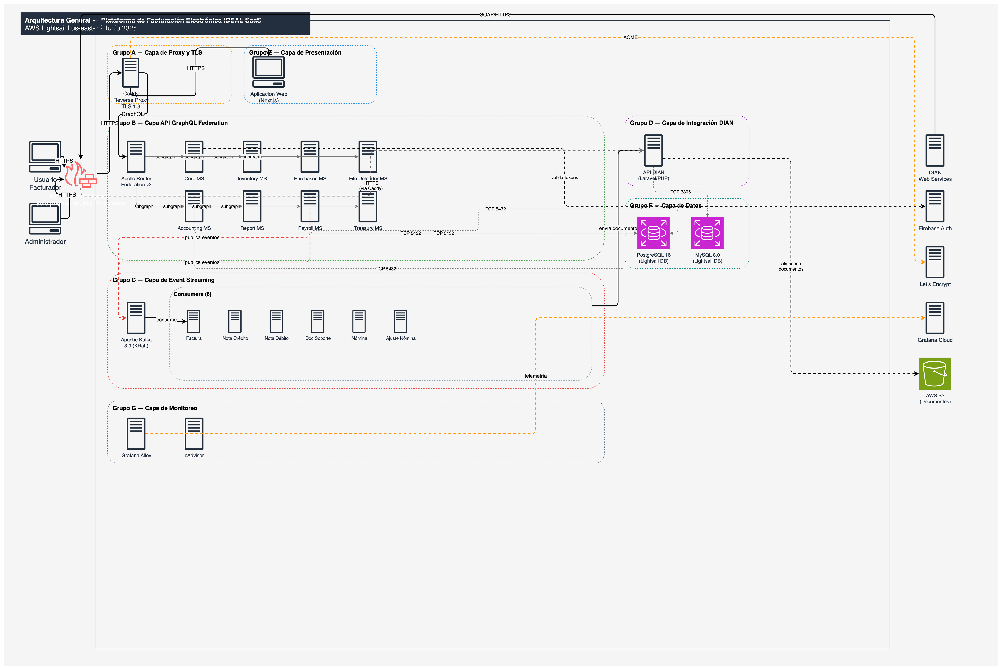
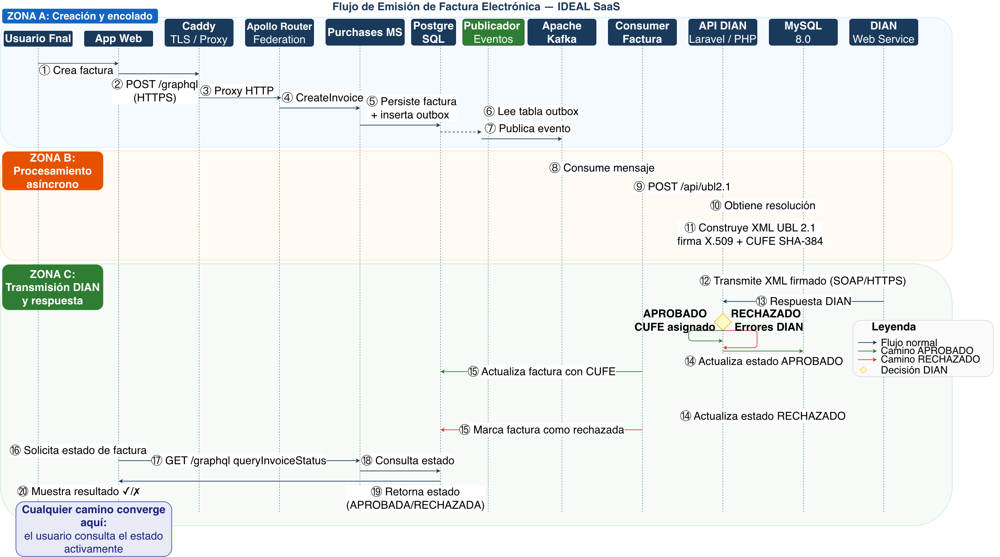
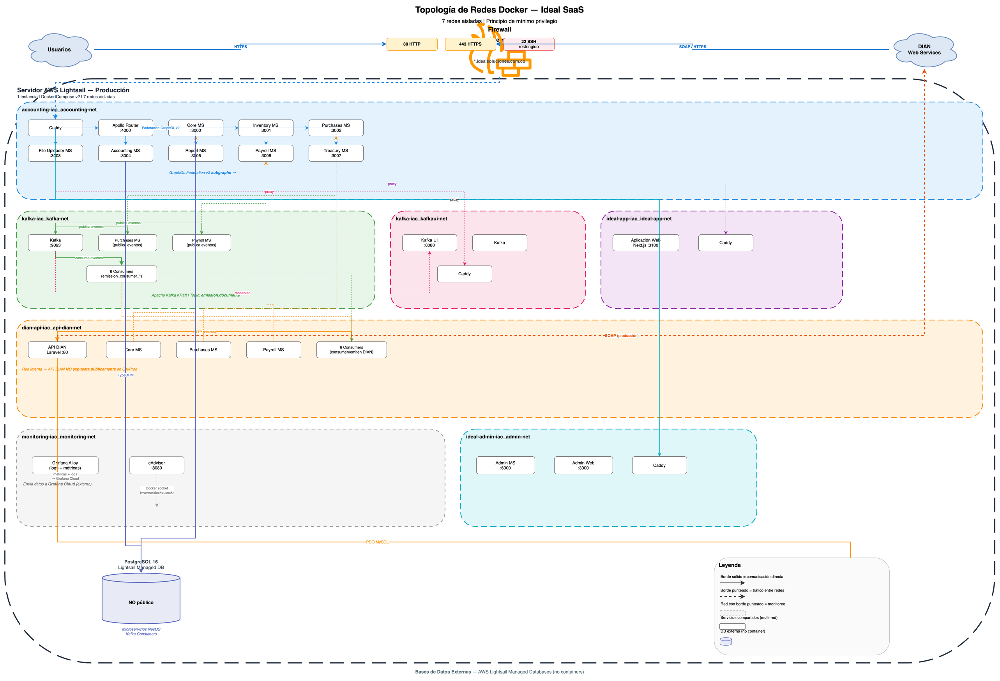
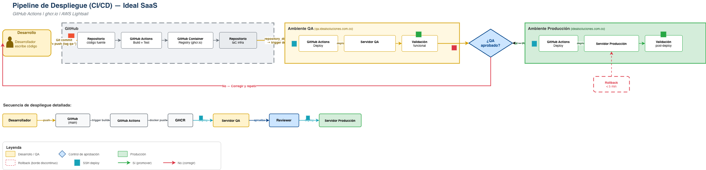
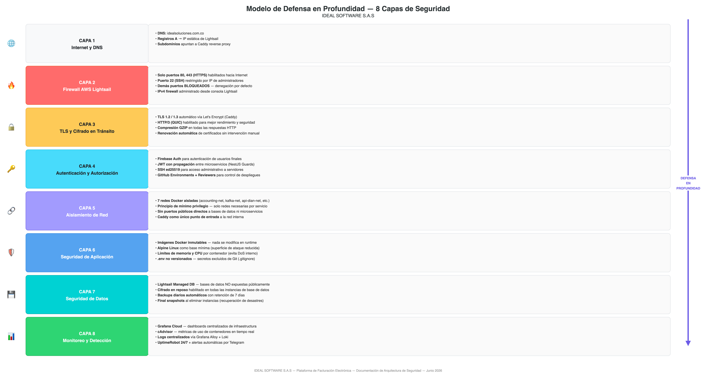
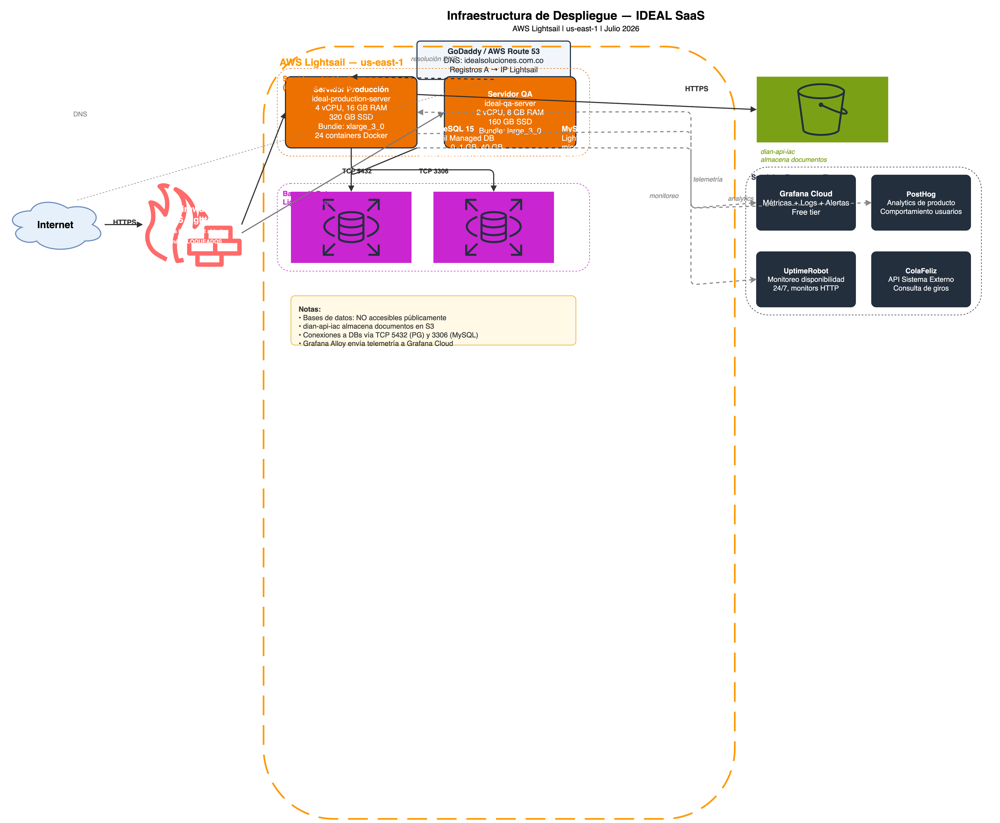

Documento preparado por:
Ricardo Cermeño Bolaño
Director de Tecnología
Aprobado por:
Felix Palacio Arguelle
Representante Legal
El presente documento tiene como propósito acreditar ante la Dirección de Impuestos y Aduanas Nacionales (DIAN) la infraestructura física, tecnológica y de seguridad con la que cuenta IDEAL SOFTWARE S.A.S para la prestación de los servicios de generación, transmisión, expedición, entrega, recepción y conservación de la factura electrónica de venta, las notas débito, las notas crédito y los demás documentos electrónicos derivados de la factura electrónica de venta, conforme a lo establecido en el numeral 8 del artículo 55 de la Resolución 00165 de 2023.
Alcance de servicios acreditados:
Compromiso: Este documento será actualizado anualmente y presentado a la DIAN junto con los soportes correspondientes, conforme a la normativa vigente.
| Campo | Valor |
|---|---|
| Razón Social | IDEAL SOFTWARE S.A.S |
| NIT | 902.027.596-7 |
| Representante Legal | Felix Palacio Arguelle |
| Director de Tecnología | Ricardo Cermeño Bolaño |
| Domicilio | CR 19 # 12-37 Local 5, Centro Comercial La 19, Santa Marta, Magdalena, Colombia |
| Objeto Social | Actividades de generación, transmisión, expedición, entrega y recepción de la factura electrónica de venta, las notas débito, las notas crédito e instrumentos electrónicos derivados de la factura electrónica de venta |
Responsable de la infraestructura tecnológica: Ricardo Cermeño Bolaño, Director de Tecnología, profesional en ingeniería de sistemas con experiencia en arquitectura de software, infraestructura cloud y seguridad de la información.
IDEAL SOFTWARE S.A.S opera su infraestructura de facturación electrónica sobre Amazon Web Services (AWS), específicamente el servicio AWS Lightsail, que proporciona servidores virtuales, bases de datos gestionadas, almacenamiento y conectividad de red en centros de datos certificados.
| Aspecto | Detalle |
|---|---|
| Proveedor | Amazon Web Services (AWS) |
| Servicio | AWS Lightsail (Infrastructure as a Service) |
| Región | us-east-1 (N. Virginia, Estados Unidos) |
| Zona de disponibilidad | us-east-1a |
| Certificaciones AWS | SOC 1/2/3, ISO 27001, ISO 27017, ISO 27018, PCI DSS Level 1, CSA STAR Level 2, FedRAMP |
| SLA de disponibilidad | 99.99% para instancias Lightsail |
Justificación de selección de AWS:
| Especificación | Valor |
|---|---|
| Nombre | ideal-production-server |
| Sistema Operativo | Ubuntu 22.04 LTS (soporte hasta abril 2027, extendido hasta 2032) |
| Procesador | 4 vCPU |
| Memoria RAM | 16 GB |
| Almacenamiento | 320 GB SSD |
| Bundle | xlarge_3_0 — 4 vCPU, 16 GB RAM, 320 GB SSD, 6 TB transferencia |
| IP Estática | [Asignada por AWS — no divulgada] |
La infraestructura de IDEAL SOFTWARE S.A.S opera en la región us-east-1 (N. Virginia, Estados Unidos) de Amazon Web Services. Esta configuración cumple plenamente con la normativa colombiana de protección de datos personales, conforme a lo siguiente:
Marco legal aplicable:
| Norma | Disposición | Cumplimiento |
|---|---|---|
| Ley 1581 de 2012 (Habeas Data) | Art. 26 - Transferencias internacionales permitidas a países con nivel adecuado de protección | ✓ |
| Decreto 1377 de 2013 | Art. 26 - EE.UU. reconocido como país con nivel adecuado por la SIC bajo el marco Data Privacy Framework | ✓ |
| ISO/IEC 27018:2019 | Estándar específico para protección de PII en la nube - certificado por AWS | ✓ |
Rol de AWS como encargado del tratamiento: AWS actúa exclusivamente como encargado del tratamiento (data processor) de conformidad con el Art. 3 de la Ley 1581 de 2012. IDEAL SOFTWARE S.A.S es el responsable del tratamiento (data controller). AWS no accede ni utiliza los datos de los clientes para ningún propósito diferente a la prestación del servicio contratado.
Certificaciones de seguridad de AWS relevantes:
Acuerdo de procesamiento de datos: AWS ofrece un Data Processing Addendum (DPA) que establece obligaciones contractuales de seguridad, confidencialidad y protección de datos, disponible en: https://aws.amazon.com/compliance/gdpr-center/
IDEAL SOFTWARE S.A.S utiliza bases de datos gestionadas de AWS Lightsail (Managed Database), que incluyen backups automáticos, mantenimiento del motor, parches de seguridad y alta disponibilidad sin intervención manual.
| Especificación | Valor |
|---|---|
| Nombre | ideal-production-postgres |
| Motor | PostgreSQL 15 |
| Bundle | micro_1_0 — 1 GB RAM, 1 vCPU, 40 GB SSD |
| Acceso público | DESHABILITADO |
| Backup automático | Diario, ventana 04:00-04:30 UTC |
| Retención de backups | 7 días |
| Ventana de mantenimiento | Domingo 05:00-05:30 UTC |
| Final snapshot | Obligatorio antes de eliminación |
| Consumidores | 8 microservicios NestJS + 6 consumers Kafka |
| Datos almacenados | Empresas, facturas, notas crédito/débito, contabilidad, nómina, inventario, tesorería, reportes |
| Especificación | Valor |
|---|---|
| Nombre | ideal-production-mysql |
| Motor | MySQL 8.0 |
| Bundle | micro_1_0 — 1 GB RAM, 1 vCPU, 40 GB SSD |
| Acceso público | DESHABILITADO |
| Backup automático | Diario, ventana 04:00-04:30 UTC |
| Retención de backups | 7 días |
| Ventana de mantenimiento | Domingo 05:00-05:30 UTC |
| Final snapshot | Obligatorio antes de eliminación |
| Consumidor | API DIAN (Laravel/PHP) |
| Datos almacenados | Resoluciones DIAN, consecutivos de facturación, XMLs generados, estados de transmisión |
| Dominio | Tipo | Propósito |
|---|---|---|
| idealsoluciones.com.co | Dominio principal | Dominio corporativo de producción |
| api.idealsoluciones.com.co | Registro A → IP producción | API GraphQL (punto de entrada del servicio) |
| app.idealsoluciones.com.co | Registro A → IP producción | Aplicación web para facturadores |
Toda la infraestructura se gestiona mediante código versionado (Terraform), lo que garantiza que puede ser recreada de forma idéntica ante cualquier contingencia. Cada cambio queda registrado y es trazable en el historial de Git. Los recursos gestionados incluyen instancias Lightsail, bases de datos gestionadas, IPs estáticas, reglas de firewall y pares de claves SSH.
IDEAL SOFTWARE S.A.S ha definido una hoja de ruta de crecimiento en tres etapas, alineada con la proyección de clientes facturadores activos:
| Capa | Tecnología | Versión | Propósito |
|---|---|---|---|
| Orquestación | Docker Compose v2 | Latest | Gestión del ciclo de vida de containers |
| Proxy reverso y TLS | Caddy | 2.8.4 | Terminación TLS automática, HTTP/3, routing |
| API Gateway | Apollo Router | Latest | GraphQL Federation v2, enrutamiento de queries |
| Backend | NestJS (Node.js) | Latest | 8 microservicios de lógica de negocio |
| Integración DIAN | Laravel/PHP | Latest | Firma digital, UBL 2.1, transmisión SOAP |
| Event streaming | Apache Kafka | 3.9.0 | Procesamiento asíncrono de documentos |
| Consumers | NestJS (Node.js) | Latest | 6 procesadores especializados por tipo de documento |
| Frontend | Next.js (React) | Latest | Interfaz de usuario server-side rendered |
| Panel de administración | NestJS + Vite | Latest | Backend y frontend de administración |
| Base de datos relacional | PostgreSQL 15 + MySQL 8.0 | Managed | Persistencia de datos de negocio |
| Monitoreo | Grafana Cloud (Alloy + cAdvisor) | Latest | Métricas, logs y alertas en tiempo real |
| CI/CD | GitHub Actions | — | Build, test y deploy automatizado |
| Registro de imágenes | GitHub Container Registry | — | Almacenamiento privado de imágenes Docker |
| Infraestructura como código | Terraform | ≥ 1.0 | Provisioning reproducible de AWS Lightsail |
La plataforma ha sido diseñada para cumplir con todos los flujos exigidos por la DIAN en el proceso de facturación electrónica. El sistema implementa los servicios web de generación, transmisión, consulta y recepción de documentos electrónicos conforme a los anexos técnicos de la Resolución 00165 de 2023.
| Servicio DIAN | Endpoint |
|---|---|
| Generación de factura electrónica | SendBillSync / SendTestSetAsync |
| Consulta de factura electrónica | GetStatus / GetStatusZip |
| Generación de nota crédito | SendBillSync (CreditNote) |
| Generación de nota débito | SendBillSync (DebitNote) |
| Generación de documento soporte | SendBillSync (SupportDocument) |
| Generación de nómina electrónica | SendPayrollSync |
| Recepción de factura electrónica | GetReceivedBills / GetReceivedBillsZip |
La plataforma IDEAL FACTURACIÓN ELECTRÓNICA se compone de 24 servicios containerizados orquestados mediante Docker Compose. Cada servicio se despliega desde imágenes publicadas en el registro privado de contenedores ghcr.io/ideal-saas.
| # | Servicio | Imagen Docker | Función |
|---|---|---|---|
| 1 | Caddy | caddy:2.8.4-alpine | Reverse proxy, terminación TLS automática (puertos 80 y 443) |
| 2 | Apollo Router | apollographql/apollo-runtime | Gateway GraphQL Federation v2 |
| 3 | Core MS | ghcr.io/ideal-saas/core-ms | Empresas, usuarios, configuración |
| 4 | Inventory MS | ghcr.io/ideal-saas/inventoryms | Inventario y productos |
| 5 | Purchases MS | ghcr.io/ideal-saas/purchase-ms | Facturación, compras, notas |
| 6 | File Uploader MS | ghcr.io/ideal-saas/file-uploader-ms | Gestión de archivos |
| 7 | Accounting MS | ghcr.io/ideal-saas/accounting-ms | Contabilidad |
| 8 | Report MS | ghcr.io/ideal-saas/report-ms | Reportes |
| 9 | Payroll MS | ghcr.io/ideal-saas/payroll-ms | Nómina electrónica |
| 10 | Treasury MS | ghcr.io/ideal-saas/treasury-ms | Tesorería |
| 11 | API DIAN | ghcr.io/ideal-saas/dian-invoicer-ms | Integración DIAN: UBL 2.1, firma digital X.509, transmisión SOAP, almacenamiento de documentos en AWS S3 |
| 12 | Apache Kafka | apache/kafka-native:3.9.0 | Broker de mensajes para procesamiento asíncrono |
| 13 | Kafka UI | kafbat/kafka-ui | Administración y monitoreo de topics Kafka |
| 14 | Consumer Factura | ghcr.io/ideal-saas/ideal-stream-consumers-dian-einvoice-emission | Emisión de factura electrónica de venta |
| 15 | Consumer Nota Crédito | ghcr.io/ideal-saas/ideal-stream-consumers-dian-note-credit-emission | Emisión de nota crédito |
| 16 | Consumer Nota Débito | ghcr.io/ideal-saas/ideal-stream-consumers-dian-note-debit-emission | Emisión de nota débito |
| 17 | Consumer Doc. Soporte | ghcr.io/ideal-saas/ideal-stream-consumers-dian-document-support-emission | Emisión de documento soporte en adquisiciones |
| 18 | Consumer Nómina | ghcr.io/ideal-saas/ideal-stream-consumers-dian-payroll-emission | Emisión de nómina electrónica |
| 19 | Consumer Ajuste Nómina | ghcr.io/ideal-saas/ideal-stream-consumers-dian-payroll-adjustment-emission | Emisión de ajuste de nómina electrónica |
| 20 | Aplicación Web | ghcr.io/ideal-saas/acc-web-app | Frontend Next.js para facturadores |
| 21 | Grafana Alloy | grafana/alloy | Recolección de métricas y logs |
| 22 | cAdvisor | gcr.io/cadvisor/cadvisor | Métricas de rendimiento de containers |
| 23 | Admin MS | ghcr.io/ideal-saas/ideal-admin-ms | Backend de panel de administración |
| 24 | Admin Web | ghcr.io/ideal-saas/ideal-admin-web | Panel de administración (Vite) |
La plataforma expone una API unificada GraphQL mediante Apollo Federation v2. El Apollo Router actúa como punto único de entrada, componiendo un supergrafo a partir de subgrafos publicados por cada microservicio. Esto permite que los clientes (aplicación web, admin) realicen consultas que abarcan múltiples dominios en una sola petición, mientras cada equipo mantiene su subgrafo de forma independiente.
| Subgrafo | Servicio | URL | Responsabilidad |
|---|---|---|---|
| coreMs | Core MS | http://core:3000/graphql | Empresas, usuarios, configuración |
| inventoryMs | Inventory MS | http://inventory:3001/graphql | Inventario, productos |
| purchaseMs | Purchases MS | http://purchases:3002/graphql | Compras, facturación, notas |
| accountingMs | Accounting MS | http://accounting:3004/graphql | Contabilidad, asientos |
| reportMs | Report MS | http://report:3005/graphql | Reportes tributarios |
| payrollMs | Payroll MS | http://payroll:3006/graphql | Nómina electrónica |
| treasuryMs | Treasury MS | http://treasury:3007/graphql | Tesorería, flujo de caja |
Ventajas de Federation v2:
La emisión de documentos electrónicos se implementa mediante una arquitectura basada en eventos sobre Apache Kafka en modo KRaft (sin dependencia de Zookeeper). La plataforma utiliza el patrón Transactional Outbox: los eventos se escriben en la base de datos dentro de la misma transacción que los datos de negocio, y un proceso publicador los envía a Kafka. Esto garantiza que ningún evento se pierda — incluso si Kafka está temporalmente indisponible, el evento permanece persistido en la base de datos hasta su publicación exitosa.
Beneficios del modelo de eventos:
La plataforma IDEAL FACTURACIÓN ELECTRÓNICA implementa una arquitectura de microservicios desplegada sobre contenedores Docker, orquestada mediante Docker Compose, con un API Gateway GraphQL unificado (Apollo Router) que expone todos los servicios a través de un único endpoint. La comunicación asíncrona entre servicios se realiza mediante Apache Kafka, y la infraestructura se provisiona como código mediante Terraform sobre AWS Lightsail. Ver Anexo A — Diagrama 1: Arquitectura General del Sistema para la representación visual completa.
El proceso externo describe el flujo de cara al facturador electrónico, desde la autenticación en Ideal App, la generación y validación del documento electrónico, la transmisión a la DIAN, y la notificación al adquirente con el XML firmado y la representación gráfica (PDF). Ver Anexo A — Diagrama 2: Flujo de Emisión de Factura Electrónica para el detalle completo de la secuencia.
El proceso interno describe el flujo técnico desde la petición GraphQL hasta la notificación final, incluyendo la coordinación entre Apollo Router, microservicios NestJS, Kafka, la API DIAN (Laravel) para firma digital y transmisión SOAP, y los consumers especializados para actualización de estado, generación de PDF y envío de notificaciones. Ver Anexo A — Diagrama 2: Diagrama de Secuencia del Proceso Interno para la representación visual detallada.
La plataforma implementa 7 redes Docker aisladas que segmentan el tráfico por dominio funcional. Cada red es de tipo bridge y puede ser referenciada desde múltiples proyectos Docker Compose mediante redes externas (external: true), permitiendo que servicios definidos en diferentes repositorios se comuniquen entre sí sin exponer puertos innecesarios. Ver Anexo A — Diagrama 3: Topología de Redes Docker para la representación visual de las redes y sus interconexiones.
La plataforma Ideal SaaS implementa un modelo de defensa en profundidad con ocho capas de protección superpuestas. Cada capa opera de forma independiente, de modo que la falla o elusión de una no compromete la seguridad global del sistema. Este enfoque garantiza que un atacante deba superar múltiples barreras para acceder a los datos o servicios.
| Capa | Componente | Función de Seguridad |
|---|---|---|
| 1 | Firewall AWS Lightsail | Filtrado de puertos a nivel de instancia. Solo se exponen 80 (HTTP), 443 (HTTPS) y 22 (SSH). Todo el resto del tráfico entrante se descarta por defecto. |
| 2 | Caddy (Terminación TLS) | Terminación TLS 1.3 con certificados Let's Encrypt. Renovación automática cada 60 días. Cifrado de todas las comunicaciones externas. |
| 3 | Segmentación por Redes Docker | 7 redes aisladas, mínimo privilegio. Aislamiento de servicios mediante 7 redes Docker independientes (accounting-net, api-dian-net, kafka-net, kafkaui-net, ideal-app-net, monitoring-net, admin-net). Cada microservicio solo accede a las redes que necesita. |
| 4 | Autenticación y Autorización | Gestión de identidad centralizada con JWT. Cada microservicio valida tokens independientemente. Roles y permisos granulares por operación. |
| 5 | Cifrado en Tránsito Interno | Comunicaciones entre microservicios protegidas mediante TLS mutuo (mTLS) dentro de las redes Docker. Kafka configurado con SASL/SCRAM y TLS para productores y consumidores. |
| 6 | Cifrado en Reposo | Bases de datos Lightsail Managed DB con cifrado de disco habilitado por AWS. Snapshots automáticos cifrados. No se almacenan secretos en texto plano en el sistema de archivos. |
| 7 | Monitoreo y Alertas | Grafana Cloud para dashboards y alertas. cAdvisor para métricas de contenedores. Grafana Alloy para recolección de logs centralizados. UptimeRobot para monitoreo externo de disponibilidad. |
| 8 | Respuesta a Incidentes | Procedimientos documentados de respuesta ante incidentes. Canales de comunicación definidos por criticidad. Estrategia de recuperación basada en infraestructura como código, imágenes inmutables y backups automáticos (ver Sección 8). |
| Elemento | Configuración | Propósito |
|---|---|---|
| Firewall AWS Lightsail (IPv4) | Puertos 80, 443, 22 abiertos. Resto cerrado. | Limitar superficie de ataque a los servicios estrictamente necesarios. |
| Firewall AWS Lightsail (IPv6) | Deshabilitado completamente. | Eliminar vector de ataque IPv6 no monitoreado. |
| Caddy Reverse Proxy | Único punto de entrada HTTP/S. Virtual hosts con encabezados de seguridad (HSTS, X-Frame-Options, X-Content-Type-Options). | Centralizar terminación TLS y enrutamiento. Prevenir ataques de capa 7 comunes. |
| Bases de Datos | Producción: publicly_accessible = false. QA: publicly_accessible = true (solo para desarrollo). | Aislar datos de producción de accesos externos directos. |
| SSH | Acceso mediante par de llaves administrado por Terraform. Sin autenticación por contraseña. | Acceso administrativo seguro sin riesgo de fuerza bruta. |
| Comunicación | Protocolo | Detalle |
|---|---|---|
| Cliente → Caddy | TLS 1.3 | Certificados Let's Encrypt (ECDSA P-256). HTTP Strict Transport Security (HSTS) con max-age=63072000 e includeSubDomains. |
| Caddy → Microservicios | HTTP plano (red interna) | Tráfico confinado a redes Docker internas sin exposición externa. No requiere TLS dentro del host. |
| Microservicios → Kafka | SASL/SCRAM-SHA-512 + TLS | Autenticación mutua con credenciales por servicio. Cifrado de todos los mensajes en tránsito. |
| Microservicios → PostgreSQL | TLS (SSL Mode: require) | Conexiones cifradas a Lightsail Managed DB. Certificados raíz de AWS verificados. |
| api_dian → MySQL | TLS (SSL Mode: require) | Conexiones cifradas a Lightsail Managed DB con verificación de certificado. |
| Grafana Alloy → Grafana Cloud | HTTPS (TLS 1.3) | Envío de logs y métricas cifrados. Autenticación por token de API. |
| Nivel | Mecanismo | Descripción |
|---|---|---|
| Autenticación | JWT (JSON Web Tokens) | Tokens firmados con RS256. Expiración configurable por entorno. Refresh tokens con rotación automática. |
| Autorización | RBAC (Role-Based Access Control) | Roles: SuperAdmin, Admin, Contador, Auditor, Operador. Permisos granulares por módulo (Facturación, Nómina, Inventario, Compras). |
| Microservicios | Guards NestJS por endpoint | Cada endpoint declara los permisos requeridos. El Apollo Router propaga el contexto de autenticación a todos los microservicios federados. |
| Kafka | SASL/SCRAM + ACLs | Cada consumidor y productor tiene credenciales únicas. ACLs restringen qué tópicos puede leer o escribir cada principal. |
| Infraestructura | Llaves SSH + AWS IAM | Acceso administrativo solo mediante llaves SSH gestionadas por Terraform. Sin usuarios/contraseñas en instancias. |
La plataforma cuenta con monitoreo 24/7 de disponibilidad externa, rendimiento de servidores, y logs centralizados con alertas automáticas ante cualquier degradación del servicio. Las herramientas específicas se detallan en el Anexo B — Inventario de Activos Tecnológicos.
Las siguientes políticas de seguridad rigen todos los aspectos de la plataforma Ideal SaaS. Su cumplimiento es obligatorio para todo el personal con acceso a los sistemas de producción. Las versiones completas y detalladas de cada política se encuentran en el Anexo C de este documento.
| Componente | Tipo | Frecuencia | Retención | Responsable |
|---|---|---|---|---|
| PostgreSQL (Lightsail Managed DB) | Snapshot automático | Diario (ventana 04:00-04:30 UTC) | 7 días | AWS Lightsail (automático) |
| MySQL (Lightsail Managed DB) | Snapshot automático | Diario (ventana 04:00-04:30 UTC) | 7 días | AWS Lightsail (automático) |
| Configuración Docker Compose y Makefiles | Repositorio Git (GitHub) | Continuo (por cada commit) | Ilimitado (historial Git) | Equipo de Desarrollo |
| Imágenes Docker | GitHub Container Registry (ghcr.io) | Por cada build de CI/CD | Ilimitado (inmutables) | CI/CD Pipeline (automático) |
| Configuración Terraform (IaC) | Repositorio Git (GitHub) + Terraform State | Continuo + state tras cada apply | Ilimitado (historial Git y versiones de state) | Equipo de Desarrollo |
| Certificados TLS (Let's Encrypt) | Renovación automática | Cada 60 días | Gestionado por Caddy | Caddy (automático) |
El artículo 632 del Estatuto Tributario colombiano exige la conservación de documentos electrónicos por un mínimo de 10 años. La plataforma cumple este requisito mediante el almacenamiento directo de todos los documentos generados en AWS S3 a través del servicio dian-api-iac, sin límite de retención.
Todos los contenedores Docker utilizan restart: unless-stopped con healthchecks definidos, asegurando el reinicio automático ante fallos. Las bases de datos Lightsail Managed DB incluyen failover gestionado por AWS con backups diarios automáticos. El monitoreo se realiza desde fuera de la infraestructura (UptimeRobot + Grafana Cloud) para garantizar alertas independientes del estado de los servidores.
La plataforma implementa el patrón Transactional Outbox para Kafka: los eventos de emisión de documentos se escriben en la base de datos dentro de la misma transacción que los datos de negocio, garantizando atomicidad y cero pérdida de eventos. Si Kafka está temporalmente indisponible, el evento permanece persistido en la tabla outbox de la base de datos hasta su publicación exitosa, eliminando cualquier riesgo de pérdida de documentos por fallos del broker de mensajería.
| Escenario | Procedimiento | Tiempo Estimado | Pérdida de Datos |
|---|---|---|---|
| Caída de un microservicio | Docker reinicia automáticamente (restart: unless-stopped). Si no se recupera, notificar al equipo. | ≤ 30 segundos | Ninguna (transacciones en curso pueden reintentarse) |
| Caída de instancia Lightsail | Lightsail reinicia la instancia automáticamente. Si no se recupera, restaurar desde snapshot de instancia. | 5-15 minutos | Ninguna (datos en DB externa) |
| Corrupción de base de datos | Restaurar desde el último snapshot diario de Lightsail Managed DB (Point-in-Time Recovery). | 30-60 minutos | Máximo 24 horas (datos posteriores al último snapshot) |
| Fallo de disco de instancia | Crear nueva instancia desde snapshot de Lightsail. Restaurar configuración desde repositorios Git. Levantar servicios con make up. | 45-90 minutos | Ninguna (configuración en Git, datos en DB externa) |
| Desastre total (pérdida de región AWS) | Crear infraestructura en región alternativa usando Terraform. Restaurar bases de datos desde snapshots. Desplegar servicios. Actualizar DNS. | 4-8 horas | Máximo 24 horas (depende de disponibilidad de snapshots cross-region) |
| Pérdida de configuración Docker/Terraform | Clonar repositorios desde GitHub. Ejecutar terraform apply para infraestructura. make up para servicios. | 30-60 minutos | Ninguna (todo en Git) |
| Ataque de ransomware o compromiso de seguridad | Aislar instancias afectadas (detener firewalls, rotar credenciales). Restaurar desde snapshots limpios anteriores al incidente. Análisis forense post-mortem obligatorio. | 2-4 horas | Máximo 24 horas (restauración desde último snapshot limpio) |
| Indicador | Objetivo | Definición |
|---|---|---|
| RPO (Recovery Point Objective) | ≤ 24 horas | Pérdida máxima de datos aceptable. Corresponde a la ventana entre backups automáticos diarios de Lightsail Managed DB (04:00-04:30 UTC). Los documentos electrónicos generados se almacenan en AWS S3 sin límite de retención, independientemente del ciclo de backups de las bases de datos. |
| RTO (Recovery Time Objective) | ≤ 2 horas | Tiempo máximo para restaurar el servicio completo. Incluye: restaurar bases de datos desde backup (~30 min), desplegar la infraestructura desde Terraform (~15 min), desplegar los 24 servicios Docker (~15 min), y verificar integridad funcional (~60 min). |
La capacidad de recuperación de la plataforma no depende de un documento externo, sino que está integrada en la arquitectura misma mediante los siguientes mecanismos:
terraform apply recrea el entorno completo en menos de 15 minutos.make pull && make up en cada repositorio de infraestructura.make up.El tiempo estimado de recuperación total (RTO ≤ 2 horas) está respaldado por estos mecanismos automatizados y ha sido verificado durante el despliegue y operación del entorno QA, que replica la arquitectura de producción.
La efectividad de la estrategia de recuperación se valida de forma continua mediante:
Los 24 servicios containerizados tienen reservas de memoria definidas con un total asignado de aproximadamente 4.3 GB (~27% de los 16 GB disponibles), dejando un headroom de ~11.7 GB (~73%) para picos de demanda y crecimiento. Los microservicios principales tienen reservas entre 128 MB y 384 MB, Kafka 1 GB, y los consumers Kafka 64 MB cada uno. El inventario detallado de reservas por servicio se encuentra en el Anexo B — Inventario de Activos Tecnológicos.
Los costos de infraestructura están disponibles para revisión bajo solicitud formal. No se incluyen en este documento de acreditación por razones de confidencialidad empresarial.
El presente Acuerdo de Nivel de Servicio (SLA) establece los compromisos de disponibilidad, tiempos de respuesta y procesamiento que Ideal SaaS garantiza a sus clientes. Estos niveles aplican para el ambiente de producción. Los ambientes de QA y desarrollo no están cubiertos por este SLA.
| Indicador | Compromiso | Medición |
|---|---|---|
| Disponibilidad Mensual | 99.5% | Tiempo total del mes menos tiempo de inactividad no programada, dividido por tiempo total del mes. Medido mediante monitoreo externo (UptimeRobot) con verificación cada 5 minutos sobre los endpoints públicos de la plataforma. |
| Ventana de Mantenimiento | Domingos 04:00-05:30 UTC | Mantenimientos programados notificados con al menos 48 horas de anticipación. El tiempo de inactividad durante la ventana de mantenimiento programada no se contabiliza para el cálculo de disponibilidad. |
| Prioridad | Tipo de Incidente | Tiempo de Respuesta | Tiempo de Resolución |
|---|---|---|---|
| P1 — Crítico | Plataforma completamente inaccesible para todos los usuarios. Pérdida o corrupción de datos. Imposibilidad de emitir documentos electrónicos (facturas, notas crédito). | ≤ 30 minutos | ≤ 2 horas |
| P2 — Alto | Funcionalidad principal degradada. Módulo específico no disponible (nómina, inventario, reportes). Emisión de documentos electrónicos con demoras significativas (> 5 minutos). | ≤ 2 horas | ≤ 8 horas |
| P3 — Medio | Funcionalidad no crítica afectada. Errores en reportes o consultas. Problemas de interfaz que no impiden la operación. Lentitud general del sistema. | ≤ 8 horas | ≤ 24 horas |
| P4 — Bajo | Consultas, dudas de uso, sugerencias de mejora. Errores cosméticos en la interfaz. Solicitudes de capacitación o documentación. | ≤ 24 horas | ≤ 5 días hábiles |
Horario de Soporte: Lunes a Viernes de 8:00 AM a 6:00 PM hora Colombia (UTC-5). Para incidentes P1 fuera de este horario, existe un equipo de guardia (on-call) con tiempo de respuesta ≤ 30 minutos. Los incidentes P2, P3 y P4 reportados fuera del horario de soporte se atienden a partir del siguiente día hábil.
Canales de Soporte:
| Operación | Tiempo Máximo | Observaciones |
|---|---|---|
| Emisión de Factura Electrónica | ≤ 30 segundos | Desde el envío de la solicitud hasta la recepción del acuse de recibo de la DIAN. No incluye el tiempo de respuesta de la DIAN que es externo al sistema. |
| Generación de Reporte Contable | ≤ 60 segundos | Reportes estándar (Balance General, Estado de Resultados, Libro Diario) para un mes fiscal. Reportes anuales o personalizados pueden exceder este tiempo. |
| Procesamiento de Nómina | ≤ 5 minutos | Procesamiento completo de una nómina de hasta 500 empleados incluyendo cálculo de prestaciones, seguridad social y generación de documento soporte de pago de nómina electrónica. |
| Carga de Archivos (Fileuploader) | ≤ 10 segundos | Archivos de hasta 10 MB. Archivos mayores pueden experimentar tiempos superiores. El límite máximo de tamaño de archivo por carga es 50 MB. |
Nota: Los tiempos de procesamiento son medidos bajo condiciones normales de operación con la carga esperada de usuarios concurrentes. Picos excepcionales de demanda o condiciones externas (disponibilidad de servicios de la DIAN, latencia de red del cliente) pueden afectar estos tiempos.
De conformidad con la legislación colombiana, Ideal SaaS dispone de un canal oficial de Peticiones, Quejas, Reclamos, Sugerencias y Felicitaciones (PQRSF) para la atención de todas las solicitudes de los clientes relacionadas con el servicio. Este canal opera bajo los siguientes lineamientos:
| Incumplimiento | Compensación | Condiciones |
|---|---|---|
| Disponibilidad mensual < 99.5% | Descuento del 10% sobre la facturación mensual por cada 0.1% por debajo del SLA, hasta un máximo del 50% de descuento. | El cliente debe solicitar la compensación dentro de los 15 días calendario siguientes al mes facturado. Se requiere evidencia del tiempo de inactividad (capturas de pantalla, logs de error). No aplica si la caída fue causada por exclusiones del SLA (ver 10.1). |
| Tiempo de respuesta P1 excedido (≤ 30 min) | Descuento del 5% sobre la facturación mensual por cada incidente P1 con respuesta tardía, acumulable hasta 15%. | Aplica por cada incidente P1 individual cuya primera respuesta exceda los 30 minutos desde la notificación por los canales oficiales. No aplica si el cliente no utilizó los canales de soporte designados para incidentes críticos. |
| Pérdida de datos por falla de la plataforma | Crédito equivalente al 100% de la facturación mensual del período afectado, más servicios gratuitos de recuperación de datos y apoyo contable para reconstrucción de información. | Aplica exclusivamente cuando la pérdida de datos sea atribuible comprobadamente a una falla de la infraestructura o software de Ideal SaaS. Excluye pérdidas causadas por: error del usuario, uso de API fuera de especificación, o fuerza mayor. La compensación máxima por este concepto no excederá 3 meses de facturación. |
| Anexo | Descripción |
|---|---|
| Anexo A | Diagramas de arquitectura, flujo de emisión de factura electrónica, topología de redes Docker, pipeline CI/CD y capas de seguridad. |
| Anexo B | Evidencias complementarias: capturas de consola, reportes de monitoreo, certificados TLS, configuraciones de backup y resultados de pruebas. |
| Anexo C | Documentos de planeación: soberanía de datos, retención por 10 años, estrategia de recuperación, plan de evidencias, SLA de clientes, hoja de ruta ISO 27001 y plan de pentesting. |
| # | Evidencia | Descripción | Estado |
|---|---|---|---|
| E-1 | Capturas consola AWS Lightsail | Screenshots instancias, DBs y firewall | Completado ✓ |
| E-2 | Output docker ps | 24 containers operativos | Pendiente |
| E-3 | Dashboard Grafana Cloud | Panel de monitoreo con métricas activas | Pendiente |
| E-4 | Certificado TLS vigente | Captura certificado api.idealsoluciones.com.co | Pendiente |
| E-5 | Evidencia de backups | Configuración backups Lightsail Managed DB | Completado ✓ |
| E-6 | Output terraform show | Infraestructura provisionada | Completado ✓ |
| E-7 | Contrato AWS | Términos de servicio AWS | Disponible |
| E-8 | Contrato GitHub | Terms of Service GitHub | Disponible |
| E-9 | UptimeRobot monitors | Monitores activos para api y app | Pendiente |
| E-10 | SSL Labs report | Calificación TLS (objetivo A+) | Pendiente |
| E-11 | Security headers report | Cabeceras de seguridad HTTP | Pendiente |
IDEAL SOFTWARE S.A.S se compromete a mantener actualizado el presente documento de infraestructura tecnológica, incorporando los cambios que surjan como resultado de modificaciones en la arquitectura, nuevos servicios desplegados, actualizaciones de seguridad o requerimientos regulatorios. La revisión y actualización se realizará conforme a la frecuencia y responsabilidades definidas en la siguiente tabla.
| Frecuencia de actualización | Anual |
| Próxima actualización | Junio 2027 |
| Responsable técnico | Ricardo Cermeño – Infraestructura y DevOps |
| Aprobación | Felix Palacio – Gerencia General |
| Criterios para actualización anticipada | Cambios mayores en la arquitectura, incidentes de seguridad, nuevas regulaciones DIAN, migración de proveedor cloud o renovación de certificaciones. |
En constancia de la veracidad y exactitud de la información contenida en el presente documento de infraestructura tecnológica, se firma en Santa Marta, D.T.C.H., a los dieciséis (16) días del mes de junio de dos mil veintiséis (2026).
_________________________
Felix Palacio
Gerente General
IDEAL SOFTWARE S.A.S
NIT: 902.027.596-7
_________________________
Ricardo Cermeño
Infraestructura y DevOps
IDEAL SOFTWARE S.A.S
NIT: 902.027.596-7
Visión de alto nivel del sistema de facturación electrónica, mostrando la relación entre usuarios, componentes internos y sistemas externos.

Proceso completo desde que el usuario genera una factura hasta la validación por parte de la DIAN y la obtención del CUFE.

Muestra el aislamiento de servicios mediante 7 redes Docker y la comunicación controlada entre componentes.

Flujo completo desde el desarrollo hasta la puesta en producción, incluyendo controles de calidad y aprobaciones.

Modelo de defensa en profundidad mostrando las múltiples capas de seguridad desde Internet hasta los datos.

Vista de los recursos físicos y lógicos de infraestructura en AWS Lightsail, incluyendo firewall, servidores, bases de datos gestionadas, almacenamiento S3 y servicios externos de monitoreo.

Las especificaciones detalladas de los servidores de producción y QA se encuentran en el documento principal, Sección 3 — Infraestructura Física. En resumen: el servidor de producción cuenta con 4 vCPU, 16 GB RAM y 320 GB SSD (bundle xlarge_3_0), y el servidor QA con 2 vCPU, 8 GB RAM y 160 GB SSD (bundle large_3_0). Ambos ejecutan Ubuntu 22.04 LTS sobre AWS Lightsail.
| ID | Motor | Bundle | Entorno | Proveedor |
|---|---|---|---|---|
| DB-003 | PostgreSQL 15 | micro_1_0 (1 GB RAM, 40 GB SSD) | QA | AWS Lightsail Managed DB |
| DB-004 | MySQL 8.0 | micro_1_0 (1 GB RAM, 40 GB SSD) | QA | AWS Lightsail Managed DB |
Las bases de datos de producción se detallan en el documento principal, Sección 3.4. Las bases de datos de QA replican la misma configuración (micro_1_0) para paridad de entornos.
El dominio principal y los subdominios de producción se detallan en el documento principal, Sección 3.5. Los dominios de QA se listan a continuación:
| ID | Subdominio | Propósito | Entorno |
|---|---|---|---|
| DNS-004 | api.qa.idealsoluciones.com.co | API GraphQL QA | QA |
| DNS-005 | app.qa.idealsoluciones.com.co | Aplicación web QA | QA |
Dominio registrado en GoDaddy. DNS gestionado mediante AWS Route 53. Todos los dominios cuentan con auto-renovación y registrar lock activado.
| ID | Servicio | Imagen Docker | Función |
|---|---|---|---|
| APP-001 | Caddy | caddy:2.8.4-alpine | Proxy reverso, terminación TLS automática (Let's Encrypt) |
| APP-002 | Apollo Router | apollographql/apollo-runtime | Gateway GraphQL Federation v2 — ruteo y composición de supergraph |
| APP-003 | Core MS | ghcr.io/ideal-saas/core-ms | Microservicio core — entidades base del sistema (NestJS) |
| APP-004 | Inventory MS | ghcr.io/ideal-saas/inventory-ms | Gestión de inventario y existencias (NestJS) |
| APP-005 | Purchases MS | ghcr.io/ideal-saas/purchases-ms | Gestión de compras y proveedores (NestJS) |
| APP-006 | File Uploader MS | ghcr.io/ideal-saas/file-uploader-ms | Carga y procesamiento de archivos (NestJS) |
| APP-007 | Accounting MS | ghcr.io/ideal-saas/accounting-ms | Módulo de contabilidad — PUC, asientos, libros (NestJS) |
| APP-008 | Report MS | ghcr.io/ideal-saas/report-ms | Generación de reportes financieros y operativos (NestJS) |
| APP-009 | Payroll MS | ghcr.io/ideal-saas/payroll-ms | Gestión de nómina y prestaciones sociales (NestJS) |
| APP-010 | Treasury MS | ghcr.io/ideal-saas/treasury-ms | Gestión de tesorería, caja y bancos (NestJS) |
| APP-011 | Kafka | apache/kafka-native:3.9.0 | Apache Kafka en modo KRaft — message broker para eventos de emisión DIAN |
| APP-012 | Kafka UI | kafbat/kafka-ui | Interfaz web de administración y monitoreo de Kafka |
| APP-013 | Consumer Factura | ghcr.io/ideal-saas/ideal-stream-consumers-dian-einvoice-emission | Emisión de factura electrónica de venta |
| APP-014 | Consumer Nota Crédito | ghcr.io/ideal-saas/ideal-stream-consumers-dian-note-credit-emission | Emisión de nota crédito |
| APP-015 | Consumer Nota Débito | ghcr.io/ideal-saas/ideal-stream-consumers-dian-note-debit-emission | Emisión de nota débito |
| APP-016 | Consumer Doc. Soporte | ghcr.io/ideal-saas/ideal-stream-consumers-dian-document-support-emission | Emisión de documento soporte en adquisiciones |
| APP-017 | Consumer Nómina | ghcr.io/ideal-saas/ideal-stream-consumers-dian-payroll-emission | Emisión de nómina electrónica |
| APP-018 | Consumer Ajuste Nómina | ghcr.io/ideal-saas/ideal-stream-consumers-dian-payroll-adjustment-emission | Emisión de ajuste de nómina electrónica |
| APP-019 | API DIAN | ghcr.io/ideal-saas/dian-invoicer-ms | Integración DIAN: UBL 2.1, firma digital X.509, transmisión SOAP, almacenamiento de documentos en AWS S3 |
| APP-020 | Aplicación Web | ghcr.io/ideal-saas/ideal-app | Frontend principal de la plataforma (Next.js) |
| APP-021 | Grafana Alloy | grafana/alloy | Agente de telemetría — recolección de métricas, logs y trazas |
| APP-022 | cAdvisor | gcr.io/cadvisor/cadvisor | Monitor de uso de recursos por contenedor (CPU, memoria, red, disco) |
| APP-023 | Admin MS | ghcr.io/ideal-saas/ideal-admin-ms | Backend de panel de administración (NestJS) |
| APP-024 | Admin Web | ghcr.io/ideal-saas/ideal-admin-web | Panel de administración (Next.js) |
La topología completa de redes (7 redes Docker aisladas con sus servicios asociados y proyectos de origen) se documenta en el documento principal, Sección 5.4. Las redes se listan a continuación para referencia de inventario:
| ID | Red | Proyecto Origen |
|---|---|---|
| NET-001 | accounting-iac_accounting-net | accounting-iac |
| NET-002 | dian-api-iac_api-dian-net | dian-api-iac |
| NET-003 | kafka-iac_kafka-net | kafka-iac |
| NET-004 | kafka-iac_kafkaui-net | kafka-iac |
| NET-005 | ideal-app-iac_ideal-app-net | ideal-app-iac |
| NET-006 | monitoring-iac_monitoring-net | monitoring-iac |
| NET-007 | ideal-admin-iac_admin-net | ideal-admin-iac |
| ID | Herramienta | Versión | Propósito |
|---|---|---|---|
| PLT-001 | Docker Engine | 24.x | Runtime de contenedores |
| PLT-002 | Docker Compose | v2.x | Orquestación local multi-contenedor |
| PLT-003 | GNU Make | 4.x | Automatización de tareas de despliegue y operaciones |
| PLT-004 | Ubuntu Server | 22.04 LTS | Sistema operativo de servidores |
| PLT-005 | Terraform | 1.x | Provisionamiento de infraestructura cloud (AWS Lightsail) |
| PLT-006 | Apollo Rover | 0.x | Composición de supergraph schema para Apollo Federation |
| PLT-007 | GitHub Actions | — | CI/CD — build, test y deploy automatizado |
| PLT-008 | GitHub Container Registry | — | Registro de imágenes Docker |
| PLT-009 | GitLab Container Registry | — | Registro de imágenes Docker (legado) |
| PLT-010 | OIDC (GitHub ↔ AWS) | — | Autenticación sin secretos de larga duración para despliegues |
| ID | Servicio | Propósito | Proveedor | Criticidad |
|---|---|---|---|---|
| EXT-001 | AWS Lightsail | Infraestructura de cómputo (instancias virtuales) | Amazon Web Services | Crítica |
| EXT-002 | AWS Lightsail Managed DB | Bases de datos gestionadas PostgreSQL 15 y MySQL 8.0 | Amazon Web Services | Crítica |
| EXT-003 | GitHub | Repositorios de código fuente, CI/CD (Actions), registro de imágenes (GHCR) | Microsoft | Alta |
| EXT-004 | Docker Hub | Imágenes base para construcción de contenedores | Docker Inc. | Media |
| EXT-005 | Let's Encrypt | Certificados TLS gratuitos para todos los dominios | ISRG | Alta |
| EXT-006 | GoDaddy / AWS Route 53 | Registro de dominios (GoDaddy) y gestión DNS (Route 53) | GoDaddy Inc. / Amazon Web Services | Alta |
| EXT-007 | DIAN | Plataforma de facturación electrónica — gobierno colombiano | Gobierno de Colombia | Crítica |
| EXT-008 | Grafana Cloud | Métricas, logs y dashboards centralizados (planeado) | Grafana Labs | Media |
| ID | Categoría | Tipo de Dato | Nivel de Sensibilidad | Residencia |
|---|---|---|---|---|
| DAT-001 | Información Fiscal | Documentos tributarios, facturas electrónicas, declaraciones DIAN | Crítico | Colombia |
| DAT-002 | Datos de Nómina | Información de empleados, salarios, prestaciones sociales | Confidencial | Colombia |
| DAT-003 | Información Contable | Libros contables, PUC, asientos, estados financieros | Confidencial | Colombia |
| DAT-004 | Datos de Clientes | Información de clientes y proveedores, NIT, datos de contacto | Confidencial | Colombia |
| DAT-005 | Logs de Aplicación | Registros de actividad de servicios y aplicaciones | Interno | Colombia |
| DAT-006 | Métricas y Monitoreo | Datos de rendimiento, uso de recursos, disponibilidad | Interno | Colombia |
| DAT-007 | Configuraciones | Archivos de configuración de servicios, redes, despliegues | Restringido | Colombia |
| DAT-008 | Credenciales | Contraseñas, tokens, llaves SSH, secretos de API | Crítico | Colombia |
Los costos de infraestructura están disponibles para revisión bajo solicitud formal. No se incluyen en este documento de acreditación.
| # | Actividad | Director Tecnología | Equipo de Desarrollo | AWS | DIAN | GitHub |
|---|---|---|---|---|---|---|
| 1 | Gestión de infraestructura cloud | A | R | C | — | — |
| 2 | Seguridad a nivel de sistema operativo | A | R | — | — | — |
| 3 | Desarrollo de aplicaciones | A | R | — | — | — |
| 4 | Gestión de bases de datos | A | R | C | — | — |
| 5 | Monitoreo y alertas | A | R | — | — | — |
| 6 | CI/CD y despliegues | A | R | — | — | I |
| 7 | Gestión de certificados TLS | A | R | — | — | — |
| 8 | Facturación electrónica DIAN | A | R | — | I | — |
| R = Responsable A = Aprobador C = Consultado I = Informado | ||||||
| Versión | Fecha | Cambios |
|---|---|---|
| 1.0 | Enero 2026 | Versión inicial del inventario de activos tecnológicos |
| 1.1 | Junio 2026 | Corrección de redes Docker (7 redes, orden canónico NET-006/NET-007), imágenes corregidas (Caddy, Apollo Router, Kafka, Kafka UI, Alloy, cAdvisor, consumers), nombres de consumers actualizados, costos movidos a confidencialidad empresarial, dominio actualizado a idealsoluciones.com.co, IPs de servidor no divulgadas |
Próxima revisión: Junio 2027
Ricardo Cermeño Bolaño
Director de Tecnología
IDEAL SOFTWARE S.A.S
NIT: 902.027.596-7
El presente anexo establece las políticas de seguridad de la información aplicables a la plataforma tecnológica de IDEAL SOFTWARE S.A.S, en cumplimiento de los requisitos de habilitación ante la DIAN como proveedor de servicios de facturación electrónica. Su alcance incluye todos los activos de información, infraestructura cloud (AWS Lightsail), servicios de aplicación, redes Docker, pipelines CI/CD y servicios externos que soportan la operación de la plataforma IDEAL.
Se aplica el principio de mínimo privilegio en todos los niveles: sistema operativo, bases de datos, redes Docker, APIs y repositorios. El acceso a servidores es exclusivamente mediante autenticación por llave SSH (sin contraseñas ni cuentas compartidas), con revisión trimestral de accesos y desactivación inmediata al cese de funciones. La autenticación de dos factores (2FA) es obligatoria para GitHub, AWS Console y GoDaddy.
| Control | Descripción |
|---|---|
| Complejidad de contraseñas | Mínimo 12 caracteres, con mayúsculas, minúsculas, números y caracteres especiales |
| Rotación de credenciales | Contraseñas de bases de datos y tokens rotados cada 90 días |
| Bloqueo por intentos fallidos | 5 intentos fallidos = bloqueo temporal de 15 minutos (fail2ban) |
| Acceso a bases de datos | PostgreSQL: microservicios y consumers autorizados. MySQL: solo API DIAN. IPs restringidas por firewall |
| Registro de accesos | Todos los accesos administrativos registrados con retención mínima de 90 días, revisados mensualmente |
Toda comunicación externa utiliza TLS 1.3 con certificados Let's Encrypt gestionados automáticamente por Caddy (renovación 30 días antes del vencimiento). Las bases de datos Lightsail Managed DB incluyen cifrado en reposo por defecto, con snapshots automáticos cifrados.
Los secretos y credenciales se almacenan exclusivamente en archivos .env.local y .env (gitignored), con plantillas .env.example como referencia sin valores reales. Está prohibido incluir credenciales en código fuente, Dockerfiles o docker-compose.yaml. Las claves de API, tokens de registro y contraseñas de bases de datos se rotan cada 90 días; las llaves SSH cada 6 meses.
Los parches de seguridad del sistema operativo (Ubuntu Server) se aplican mensualmente. Las imágenes Docker de aplicación se actualizan por release mediante CI/CD automatizado. Las bases de datos gestionadas reciben parches automáticos de AWS. Se realiza escaneo de vulnerabilidades en imágenes Docker en el pipeline CI/CD, bloqueando el despliegue ante vulnerabilidades críticas. Dependabot monitorea dependencias en repositorios.
El hardening de servidores incluye: firewall con solo puertos 80, 443 y 22 abiertos (gestionado vía Terraform), SSH sin login como root y solo por llave, fail2ban para protección contra fuerza bruta, y solo servicios esenciales instalados. Los backups son automáticos diarios (Lightsail Managed DB) con 7 días de retención, verificados mensualmente mediante restauración de prueba en QA.
La plataforma utiliza 7 redes Docker independientes para aislar el tráfico entre componentes, siguiendo el principio de mínimo privilegio a nivel de red.
| Puerto | Propósito | Acceso |
|---|---|---|
| 80/TCP | HTTP (redirección a HTTPS) | Público (0.0.0.0/0) |
| 443/TCP | HTTPS (Caddy TLS) | Público (0.0.0.0/0) |
| 22/TCP | SSH administrativo | Restringido (IPs de oficina) |
AWS Lightsail proporciona protección contra DDoS y Caddy incluye rate limiting y timeouts. No se expone ningún puerto de base de datos a internet pública. El acceso administrativo remoto se realiza exclusivamente mediante SSH con llave criptográfica. Se monitorean patrones anómalos de tráfico con alertas automatizadas.
Se considera incidente de seguridad cualquier evento que comprometa la confidencialidad, integridad o disponibilidad de los activos de información de la plataforma IDEAL.
| Nivel | Descripción | Tiempo de Respuesta |
|---|---|---|
| Crítico | Afecta datos fiscales, disponibilidad total del servicio, o implica fuga de datos | < 1 hora |
| Alto | Degradación significativa del servicio o compromiso de un componente no crítico | < 4 horas |
| Medio | Afecta un componente aislado sin impacto en la operación principal | < 24 horas |
| Bajo | Evento de seguridad menor sin impacto operativo | < 72 horas |
El procedimiento de notificación sigue la cadena: detección → evaluación y clasificación (máx. 30 min) → notificación al equipo técnico → notificación a la DIAN (< 24 h si aplica) → notificación a clientes (< 48 h). Las medidas de contención inmediata incluyen aislar el componente afectado y preservar evidencia forense. Tras la erradicación y recuperación, se realiza un análisis post-mortem en los 5 días hábiles posteriores. Se mantiene un registro centralizado de todos los incidentes, revisado trimestralmente.
La política de continuidad del negocio —que incluye los objetivos de recuperación (RPO ≤ 24 horas, RTO ≤ 2 horas), la estrategia de backups, y los mecanismos de recuperación integrados en la arquitectura— se documenta en detalle en el documento principal: Sección 7 — Continuidad de la Prestación del Servicio y Sección 8 — Objetivos de Recuperación y Estrategia de Recuperación.
Todos los proveedores de servicios que manejan o tienen acceso a datos de la plataforma IDEAL son evaluados antes de su contratación y reevaluados anualmente. La evaluación considera: seguridad de la infraestructura, cumplimiento normativo, certificaciones (ISO 27001, SOC 2), SLA, ubicación geográfica de datos, y viabilidad financiera del proveedor.
| Criterio | Evaluación | Cumplimiento |
|---|---|---|
| Certificaciones | ISO 27001, SOC 1/2/3, PCI DSS, FedRAMP | Cumple |
| Residencia de datos | Región us-east-1 (Virginia, EE.UU.) | Aceptable — datos fiscales residen en BD gestionada |
| SLA | 99.95% Lightsail, 99.95% Managed DB | Cumple |
| Cifrado | Cifrado en reposo y tránsito por defecto | Cumple |
| Respaldo | Backups automáticos 7 días (Managed DB) | Cumple |
| Criterio | Evaluación | Cumplimiento |
|---|---|---|
| Control de acceso | 2FA obligatorio, roles de equipo, branch protection | Cumple |
| Seguridad de pipeline | OIDC para autenticación AWS sin secretos de larga duración | Cumple |
| Escaneo de secretos | GitHub secret scanning + push protection habilitado | Cumple |
| Registro de contenedores | GHCR con tokens de acceso de solo lectura para despliegue | Cumple |
La DIAN es un proveedor externo obligatorio para la operación de facturación electrónica en Colombia. IDEAL SOFTWARE S.A.S no tiene control sobre su disponibilidad o SLA. Se implementan mecanismos de reintento y cola de mensajes (Kafka) para manejar intermitencias del servicio de la DIAN. Los consumidores Kafka reintentan documentos fallidos con backoff exponencial.
| Criterio | Evaluación | Cumplimiento |
|---|---|---|
| Autenticación | 2FA habilitado en cuenta de registro | Cumple |
| Renovación | Auto-renovación habilitada para todos los dominios | Cumple |
| Bloqueo de transferencia | Registrar lock activado para prevenir transferencias no autorizadas | Cumple |
| DNS | Registros A para IPs estáticas de Lightsail, propagación < 1 hora | Cumple |
Revisión anual de cada proveedor con actualización de la matriz de evaluación. Monitoreo continuo de: estado de servicios (AWS Health Dashboard, GitHub Status), cambios en términos de servicio o SLA, incidentes de seguridad reportados por el proveedor. Los hallazgos que afecten la operación de IDEAL se escalan al Director de Tecnología para evaluación de continuidad o migración.
IDEAL SOFTWARE S.A.S adopta un modelo de desarrollo seguro integrado en todas las fases del ciclo de vida: planificación (análisis de riesgos), diseño (modelado de amenazas), implementación (estándares de codificación segura OWASP), verificación (SAST, revisión de código, pruebas de seguridad), despliegue (CI/CD con validaciones de seguridad y OIDC para autenticación AWS sin secretos de larga duración), y operación (monitoreo continuo y respuesta a incidentes).
El control de versiones sigue Git Flow simplificado (main/producción, develop/QA, feature/desarrollo) con branch protection en main que requiere PR, revisión aprobada y CI verde. GitHub secret scanning + push protection bloquean credenciales en repositorios. El pipeline CI/CD incluye: escaneo de seguridad en cada etapa (análisis estático, escaneo de dependencias, linting de infraestructura), pruebas unitarias y de integración, escaneo de secretos, y verificación de despliegue con rollback automático ante fallos. Todos los cambios requieren code review verificando estándares OWASP Top 10, ausencia de credenciales, manejo seguro de errores, y logs sin datos sensibles.
| Política | Nombre | Estado |
|---|---|---|
| Política 1 | Control de Acceso | Implementado |
| Política 2 | Cifrado y Protección de Datos | Implementado |
| Política 3 | Seguridad en Operaciones | Implementado |
| Política 4 | Seguridad en Comunicaciones | Implementado |
| Política 5 | Gestión de Incidentes | Implementado |
| Política 6 | Continuidad del Negocio | Implementado |
| Política 7 | Gestión de Proveedores | Implementado |
| Política 8 | Desarrollo Seguro | Implementado |
| Versión | Fecha | Cambios |
|---|---|---|
| 1.0 | Enero 2026 | Versión inicial con 8 políticas de seguridad de la información |
| 1.1 | Junio 2026 | Agregada política CI/CD con OIDC, actualización de monitoreo (Grafana Alloy + cAdvisor) |
Próxima revisión: Junio 2027
|
Felix Palacio Representante Legal IDEAL SOFTWARE S.A.S NIT: 902.027.596-7 |
Ricardo Cermeño Bolaño Director de Tecnología IDEAL SOFTWARE S.A.S NIT: 902.027.596-7 |